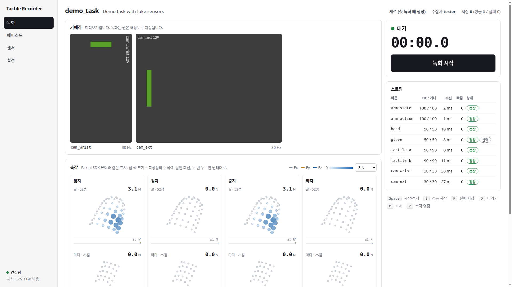

녹화기 확정안
팔(OMY) · 손(LEAP) · 글러브(Manus) · 촉각(Paxini) · 카메라(RealSense)를 한 시계로 기록하고, 나중에 openpi용 LeRobot v2.1 데이터셋으로 뽑는 프로그램이다. 11/13~14 논의에서 정한 것을 단계별로 적고, 무엇이 만들어졌고 무엇이 현장 확인을 기다리는지 표시한다.
요약
원본 먼저센서별 원래 속도로 다 받고, 데이터셋은 변환기로 뽑는다
허브 1개Python 프로세스 하나가 모든 장치를 읽고 한 시계로 시각을 찍는다
LeRobot v2.1openpi가 고정한 버전으로 쓰기·읽기 확인
90 Hz 촉각원본에 전부 남고, 데이터셋에는 스텝당 3개씩 들어간다
| 정한 것 | 내용 | 이유 |
|---|---|---|
| 방식 | 녹화 중에는 원본만 저장, 시간 맞추기는 오프라인 변환 | 최신 LeRobot은 Python 3.12 이상이라 User PC(3.10)에서 못 쓴다. 출력 형식도 v2.1 / v3.0 / zarr로 갈린다. 원본이 있으면 fps와 항목을 바꿔 다시 뽑을 수 있다 |
| 구조 | 허브 프로세스 하나 (A안) | 부품이 가장 적고, 한 시계로 시각을 찍으며, 촉각이 직렬화 없이 들어온다 |
| 출력 | LeRobot v2.1 (openpi 215abfb가 고정한 lerobot 0cf8648) | pi0.5 fine-tune 환경이 이 버전이다 |
| 팔 통신 | zenoh 유지. 팔 토픽만 zenoh-ros2-sdk로 ROS 없이 구독 | 막힌 곳은 Humble용 rmw_zenoh뿐이다. SDK는 Jazzy와 같은 방식으로 타입 해시를 만든다 |
| 재사용 | 센서 읽기 부분을 추론·online RL과 공유 | 학습 때와 실행 때의 입력이 같아야 한다. 5080 PC가 오면 같은 허브에서 추론한다 |
| 카메라 | 손목(D405) + 외부 고정(D435i 예정). 깊이는 뺀다. 회전은 설정값 | pi0.5도 우리 모델도 깊이를 쓰지 않는다. 원본은 회전 없이 저장해서 방향을 나중에 바꿀 수 있다 |
| 글러브 | 텔레옵 틱(50 Hz)으로 저장, 모든 관절 노드 포함 | 리타게터가 실제로 본 값이다. 전체 노드가 있으면 리타게팅을 오프라인으로 다시 돌릴 수 있다 |
| UI | 브라우저 화면 (B안) + 디버깅용 터미널 | 미리보기와 조작이 한 화면이고, 로봇 옆 태블릿에서도 열린다 |
| 범위 | 이번에는 녹화기까지. 정책 실행과 bring-up GUI는 다음 | 서로 독립적인 덩어리라서 나눴다 |
구조
subscribe()만, UI와 정책은 latest()만 쓴다.0. 현장 확인 현장 대기
실물을 못 쓰는 동안 먼저 만들기로 했다. 확인이 안 된 세 가지는 모두 장치 어댑터 안에 갇혀 있고, 현장에서 명령 하나씩으로 확인한다.
| 확인 | 명령 | 안 되면 |
|---|---|---|
| 팔 토픽이 SDK로 오는지 | tactile-rec check arm_state, check arm_action | Robot PC 컨테이너에 작은 중계 노드를 둔다. 어댑터 파일 하나만 바뀐다 |
| Paxini 여러 센서 동시 스트림 | tactile-rec check tactile_a | Hz가 낮으면 설정의 기대 Hz를 실측값으로 맞춘다 |
| 카메라 두 대와 프레임 시각 종류 | tactile-rec check cam_wrist | USB 대역이 모자라면 해상도·fps를 낮춘다 |
1. 센서 계층 구현
모든 장치가 같은 모양의 "스트림"이다. 어댑터는 값을 받는 즉시 push()만 부르고, 버퍼·구독·Hz·끊김 계산은 공통 부품이 한다.
Sample: t_recv_ns 허브 PC monotonic 시계, 도착 즉시
t_src_ns 장치가 준 시각. 없으면 -1
seq 허브가 센 번호
src_seq 장치가 센 번호 (프레임 번호, 텔레옵 틱). 빠진 개수를 여기서 센다
data 이름 붙은 배열들
Stream: latest() 최신값 (UI, 정책)
subscribe(fn) 모든 샘플 (기록기). 버퍼에 있던 직전 구간부터 이어서 받을 수 있다
health() 실제 Hz, 마지막 수신 후 경과, 빠진 수, 상태(정상 / 느림 / 끊김 / 오류)| 스트림 | 읽는 방법 | 내용 | 장치 시각 | 상태 |
|---|---|---|---|---|
arm_state | zenoh-ros2-sdk, /joint_states | 위치·속도·effort, 관절 이름 순서로 재배열 | Robot PC header.stamp | 현장 미검증 |
arm_action | zenoh-ros2-sdk, /leader/joint_trajectory | leader 명령의 첫 점 | 대개 없음 | 현장 미검증 |
hand | leap-teleop --record-udp가 틱마다 보냄 | 명령, 실제 전송값, 측정 위치·속도·전류, 모드 | 텔레옵 틱 시각 (같은 시계) | 시험 통과 |
glove | 같은 패킷 | ergonomics 20개, 모든 관절 노드의 위치·방향 | 글러브 수신 시각 (같은 시계) | 시험 통과 |
tactile_a/b | Paxini SDK, 보드당 스레드 하나 | 보드가 보낸 원시 바이트 그대로 | 없음 | 다중 센서 미검증 |
cam_* | pyrealsense2 직접 | BGR 프레임(회전 없음), 프레임 번호, 시각 종류 | RealSense 프레임 시각 | 현장 미검증 |
- 텔레옵은 건드리지 않는다.
leap_teleop에는 기록 전용 싱크 하나(record_sink.py)와 옵션 하나만 추가했다. 싱크가 실패해도 손은 멈추지 않는다. - 잘못 꽂힌 센서는 녹화되지 않는다. 보드가 보고한 모듈이 설정의
places와 다르면 그 스트림은 오류로 멈춘다. - 장치가 끊겼다 돌아오면 스스로 다시 연다. 녹화기를 재시작할 필요가 없다.
2. 저장 방식 구현
<데이터 루트>/ 설정의 data_root 또는 --root
<태스크 이름>/ 예: pick_cup. 변환기는 이 폴더 단위로 데이터셋을 만든다
2026-11-20_1430_<수집자>/ 세션
session.json 설정 사본, 장착 모드, 코드 버전
ep_0001/
episode.json 태스크 문장, 시작·끝 시각, 결과, 끊김 표시, 스트림별 사양과 통계
arm_state.npz arm_action.npz hand.npz glove.npz
tactile_a.npz tactile_b.npz
cam_wrist.mjpeg cam_wrist.npz 영상 + 프레임별 시각·파일 내 위치
events.jsonl 촉각 영점, 끊김·복구, 사용자 표시| 정한 것 | 내용 |
|---|---|
| 숫자 스트림 | 메모리에 모았다가 정지할 때 스트림당 .npz 하나로 쓴다. 녹화 중 프로그램이 죽으면 그 에피소드 하나를 잃는다 (합의함) |
| 영상 | 카메라마다 별도 스레드가 JPEG(품질 95)로 압축해 .mjpeg에 이어 쓴다. 밀리면 프레임을 버리고 개수를 센다. 시각은 캡처 때 이미 찍혀 있다 |
| 저장 확정 | ep_0001.tmp/에 쓰고 저장할 때 이름을 바꾼다. .tmp가 없는 폴더는 항상 완전하다 |
| 시작 전 1초 | 녹화 시작 직전 1초를 버퍼에서 꺼내 같이 저장한다. 촉각 history가 첫 스텝에도 있다 |
| 촉각 | 원시 바이트를 그대로 둔다. SDK가 자체 제작이고 해석 규칙이 작은 힘에서만 검증돼서, 규칙이 틀려도 다시 찍지 않고 고칠 수 있다 |
| 결과 표시 | 저장할 때 성공 / 실패를 고른다. 실패도 지우지 않는다 (나중에 RL에 쓸 수 있다) |
| 장착 모드 | 에피소드마다 기록한다. 변환기가 서로 다른 장착이 섞인 입력을 거부한다 |
3. 녹화 제어 구현
대기 ──시작──▶ 녹화 중 ──정지──▶ 검토 ──성공 저장 / 실패 저장 / 버리기──▶ 대기- 시작 전 점검: 필수 스트림이 모두 정상이고, 텔레옵이
live이고, 디스크 여유가 있어야 시작된다. 아니면 이유를 보여 주고 거부한다. 강제 시작은 따로 있고, 그 에피소드에 표시가 남는다. - 녹화 중 센서 끊김: 녹화는 계속하고, 화면과 소리로 알리고, 에피소드에 표시한다. 변환기는 이런 에피소드를 기본으로 제외한다.
- 시간 제한: 설정하면 자동으로 정지한다.
- 제어 로직은 화면과 분리:
Recorder객체 하나가 전부이고, 웹과 터미널은 같은 메서드를 부른다.
4. 변환기 구현
tactile-rec convert --config rig.yaml --in <루트>/pick_cup --out <출력> --repo-id shape_up/pick_cup| 키 | 차원 | 내용 |
|---|---|---|
observation.state | 22 | 팔 6 + 손 16 측정 위치 (rad) |
action | 22 | 팔 leader 명령 6 + 손 명령 16 (rad). 손은 cmd(기본) 또는 sent |
observation.hand_current | 16 | 모터 전류 (mA) |
observation.tactile.resultant | 8 x 3 = 24 | 센서별 합력 (N). 순서: 엄지 끝·마디, 검지, 중지, 약지 |
observation.tactile.distributed | (4x52 + 4x25) x 3 = 924 | 측정점별 힘 (N) |
observation.tactile.resultant_hr | 3 x 24 = 72 | 한 스텝 안의 90 Hz 샘플 3개. 마지막이 그 스텝의 값 |
observation.images.<카메라> | H x W x 3 | 설정대로 회전한 RGB |
시간 맞추기
- 격자: 녹화 시작 이후, 모든 스트림이 값을 낸 시점부터 1/30초 간격.
- 값 고르기: 각 격자 시점에서 그 이전의 가장 최근 값. 미래 값을 쓰지 않고 보간하지 않는다.
- 스트림별 시각 선택 (
dataset.time):recv수신 시각,src장치 시각,respreadUSB 뭉침 제거. 기본은 손src, 촉각respread, 나머지recv. respread의 규칙: 한꺼번에 도착한 샘플을 뒤에서부터 한 주기씩 앞으로 편다. 샘플을 수신 시각보다 늦게도, 실제로 만들어진 시각보다 이르게도 놓지 않는다. 프레임이 유실돼도 마찬가지라서 데이터셋에 미래 값이 섞이지 않는다.- 지연 보정 (
dataset.latency_ms): 스트림별로 빼 줄 지연. 현장 실측 뒤에 채운다. 원본은 그대로라서 값을 바꿔 다시 변환할 수 있다. - 품질 보고: 에피소드마다 스트림별로 "값이 최대 몇 ms 오래됐는지"를 낸다. 150 ms를 넘거나 끊김 표시가 있으면 기본으로 제외한다.
변환은 openpi 환경에서 돌린다. 쓰는 쪽과 읽는 쪽의 datasets 라이브러리 세대가 다르면 읽기가 실패한다. 확인 과정에서 4.x로 쓴 것을 3.x로 읽지 못했다. openpi 환경 안에서 변환하면 같은 버전으로 맞는다.
5. 검증 실물 없는 부분 완료 현장 대기
- 가짜 장치가 4초마다 촉각 힘, 모터 전류, 카메라 밝기에 같은 순간의 "톡"을 넣는다. 녹화 → 저장 → 변환 뒤에 세 신호가 같은 스텝에 있는지 시험한다. 허용 오차는 규칙에서 나오는 값인 한 스텝이다.
- 실측 도구
tactile-rec tap: 실제 에피소드에서 날카로운 사건을 찾아 스트림 간 시간 차이를 낸다. 결과를latency_ms에 넣는다. - 재생
tactile-rec replay: 원본 에피소드를 Rerun으로 본다. - 현장 체크리스트는 사용법 문서 5절에 있다.
6. 정책 쪽 재사용 공유 함수까지 나머지는 다음 프로젝트
- 이번에 만든 것: 단위·관절 순서·영상 회전·촉각 순서를 정하는 함수를
features.py한 곳에 두고, 변환기와 실시간 관측(live.observe())이 같이 쓴다. - 다음에 만들 것: 팔 명령 발행(
/leader/joint_trajectory에 zenoh SDK로), 손 명령(leap_teleop에 "정책" 입력 추가. 기존 hold / release 안전 동작 유지),policy스트림(base chunk 번호, 실행 위치, residual), 사람 개입 기록.
7. UI 구현

| 페이지 | 내용 |
|---|---|
| 녹화 | 카메라 미리보기(회전 적용, 영상 비율 그대로), 손가락 4개의 끝·마디 촉각, 손 관절의 명령 대 측정, 상태·타이머·큰 버튼, 시작 전 점검 결과, 스트림 표 |
| 촉각 표시 | Paxini SDK 뷰어(paxini_sdk/tools/to_rerun.py)와 같은 규칙: 제조사 좌표의 3D 측정점, 힘이 없으면 밝은 회색, 수직력이 클수록 진한 파랑과 큰 점(기본 3 N에서 최대), 센서마다 합력 Fx / Fy / Fz 추이. 끌어서 회전한다 |
| 에피소드 | 이 태스크의 저장 목록, 길이·최대 공백·표시, 성공 / 실패 변경, 삭제, 변환 명령 |
| 센서 | 스트림별 Hz 추이, 받은 수, 빠진 수, 항목, 펌웨어와 모듈 배치, 촉각 영점 보정 |
| 설정 | 태스크 이름·문장, 수집자, 시간 제한 (대기 중에만). 장치 구성은 읽기 전용 |
- 조작: 버튼과 단일 키(Space, S, F, D, M, Z). 발판 스위치를 키로 매핑하면 그대로 쓴다.
- 소리: 시작, 정지, 저장, 끊김이 서로 다른 소리다.
- 확장: 왼쪽 메뉴에 항목을 추가하는 구조라서, 나중의 bring-up 화면이 여기에 붙는다.
- 접속 범위: 기본은 이 PC에서만 열린다(
127.0.0.1). 태블릿에서 쓰려면--host 0.0.0.0으로 띄운다. 로그인이 없으므로 믿을 수 있는 네트워크에서만 쓴다. 다른 웹 페이지가 보낸 요청은 거부한다.
폴더와 기술 스택
recorder/
config/rig.example.yaml rig.fake.yaml
src/tactile_rec/
types.py clock.py config.py 공통 형식, 시계, 설정 검증
stream.py 스트림 공통 부품
streams/ arm_zenoh, hand_udp, paxini, realsense, fake, specs
hub.py 스트림 생성·시작·정지, 이벤트 기록
tactile.py features.py live.py 촉각 해석, 관측 만들기(공유), 최신값
record/ writer(에피소드 쓰기), session(녹화 상태 흐름)
convert/ load, align(시간 맞추기), episode, dataset(v2.1 쓰기)
ui/ server(FastAPI), terminal, static/(HTML·JS·CSS)
tools/ check, tap, inspect, replay
cli.py
tests/
user_pc/src/leap_teleop/record_sink.py 손·글러브 값을 허브로 보내는 싱크| 부분 | 선택 | 이유 |
|---|---|---|
| 언어 | Python 3.10 이상 | User PC와 학습 서버 양쪽에서 돈다 |
| 저장 | numpy .npz, JPEG | 의존성이 적고 어디서나 읽힌다 |
| 웹 UI | FastAPI + WebSocket, 빌드 없는 HTML / JS / CSS | Node와 빌드 단계가 없다 |
| 장치 라이브러리 | zenoh-ros2-sdk, paxini_sdk, pyrealsense2 | 모두 선택 설치. 해당 어댑터가 연결할 때만 불러온다 |
| 데이터셋 쓰기 | openpi가 고정한 lerobot | 서버에서만 필요하다. User PC에는 설치하지 않는다 |
| 시험·검사 | pytest, ruff | 기존 user_pc와 같은 도구 |
오류를 줄이는 방법
- 하드웨어를 어댑터 안에 가둔다. 어댑터는 얇고, 로직은 공통 부품에 있다. 메시지 → 배열 변환 같은 부분은 순수 함수로 빼서 장치 없이 시험한다.
- 가짜 장치로 전체를 돌린다.
config/rig.fake.yaml로 UI까지 그대로 뜬다. - 시계를 주입한다. 시험에서는 가짜 시계로 정확한 시각에 샘플을 넣는다.
- 시간 맞추기는 순수 함수다. 파일도 장치도 없이 경계 경우를 시험한다.
- 기록이 캡처를 막지 않는다. 소비자가 예외를 내도 장치 스레드는 계속 돈다.
- 설정 오류는 시작할 때 멈춘다. 모르는 키, 없는 스트림 이름, 폴더 이름으로 못 쓰는 태스크 이름을 읽을 때 거부한다.
- 검증 안 된 것은 그렇게 적는다. 해당 어댑터 파일 맨 위에
FIELD-UNVERIFIED와 확인 명령이 적혀 있다.
확인한 것 (2026-11-14, 이 PC에서)
| 확인 | 결과 |
|---|---|
| 녹화기 시험 | 89개 통과 (recorder/tests) |
| 기존 텔레옵 시험 | 155개 통과 (user_pc/tests, 싱크 시험 4개 포함). 기존 동작 변화 없음 |
| 코드 검사 | ruff 통과 |
| 가짜 장치 실제 실행 | 에피소드 2개. 팔 100 Hz, 손 50 Hz, 촉각 90 Hz, 카메라 30 Hz 그대로 기록, 빠짐 0 |
| LeRobot v2.1 | openpi가 고정한 lerobot으로 쓰고 LeRobotDataset으로 다시 읽음. 위 표의 키와 차원 그대로 |
| 코드 리뷰 (11/14) | 10건 반영: 디스크 쓰기 실패 시 멈춤, 프레임 유실 때 촉각 시각이 앞당겨지는 문제, UI 갱신 작업이 예외 하나로 죽는 문제, --overwrite가 검증 전에 지우는 문제, 잘못된 글러브 패킷이 손 값까지 버리는 문제, 다른 PC의 시각을 그대로 믿는 문제, 건너뛸 에피소드가 변환 전체를 막는 문제, 서버 지연, 외부 접속 기본값, 중복 코드 |
| 실측 도구 | 가짜 신호에서 스트림 간 차이 13 ms 이내 (각 스트림의 한 주기 안) |
| 웹 UI | 헤드리스 Chrome으로 네 페이지 렌더 확인, API로 시작 → 정지 → 저장 확인 |
남은 것
| 항목 | 언제 | 비고 |
|---|---|---|
| 현장 확인 세 가지와 실측 | 다음 현장 | 사용법 문서 5절 순서대로 |
| 설정의 "확인 필요" 값 | 다음 현장 | 팔 Hz, 촉각 places, 손목 카메라 회전 방향(90 / 270), 외부 카메라 시리얼 |
| openpi 데이터 설정 파일 | 첫 실제 데이터셋이 나온 뒤 | 우리 키를 pi0.5 입력에 연결하고 학습 몇 스텝을 돌려 본다 |
| 두 PC 시계 맞추기 (chrony) | 실측에서 팔 지연이 문제일 때 | 지금은 수신 시각 기준이다 |
| 정책 실행, bring-up GUI | 다음 프로젝트 | 6절, 7절 |